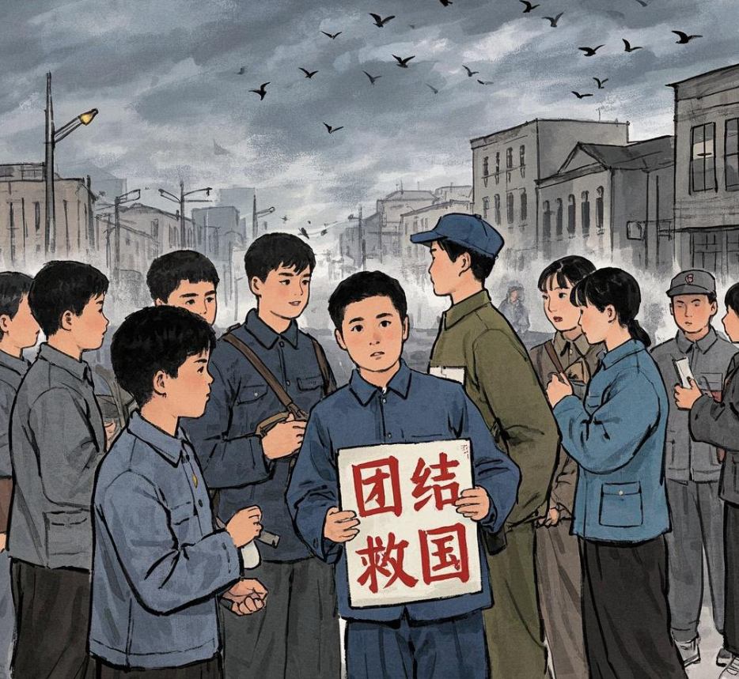

第一幕：破晓前的集结

地点：清华大学、燕京大学校园内及前往西直门途中 画面：天色墨黑，寒风呼啸，校园里一片寂静。学生团员们在黑暗中悄然行动，轻声传递消息，陆续从宿舍、教学楼的各个角落汇聚。他们有的整理着自制的标语旗帜，有的低声交流着行动计划，虽然四周黑暗且寒冷，但每个人眼中都闪烁着坚定的光芒。 旁白：1935 年，日本帝国主义加紧侵略，妄图吞并华北五省，炮制 “华北自治” 阴谋。国民政府却一味妥协退让，民族危机空前严重。在这至暗时刻，中共地下党秘密组织和领导着北平的学生团员与进步青年，一场改变历史进程的抗日救亡运动，即将在黎明前的黑暗中爆发。 学生团员 A：（压低声音，但难掩激动）同学们，我们为了国家，为了民族，今天一定要让全中国听到我们的声音！ 学生团员 B：（用力点头，握紧拳头）对！打倒日本帝国主义，停止内战，一致对外，不达目的，誓不罢休！ 画面：学生们逐渐集合完毕，形成整齐的队伍，朝着西直门方向进发。一路上，他们小心翼翼却又步伐坚定，避开军警的巡逻，相互提醒、相互扶持。当接近西直门时，发现城门已被国民党军警重重封锁，军警们手持武器，神情戒备。 学生团员 C：（看着前方的军警，愤怒地说）他们想拦住我们，做梦！我们绝不退缩！ 学生团员 D：（眼神坚定，大声鼓舞）大家不要害怕，保持队形，听指挥，冲过去！ 旁白：面对敌人的阻拦，学生团员们没有丝毫畏惧，他们在黑暗中凝聚力量，准备冲破这黎明前最后的黑暗，迎接抗日救亡的曙光。